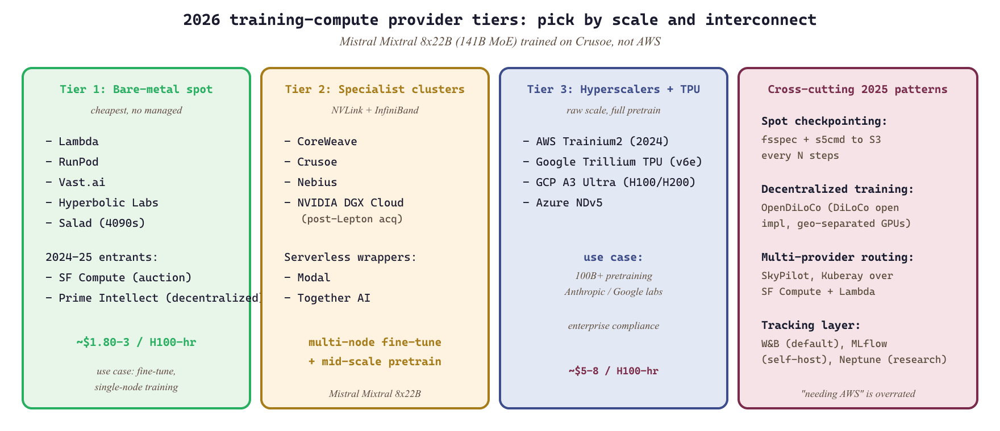

Training is the chapter of the book where compute is the protagonist. The platforms in this section are not Python imports; they are GPU rentals, distributed-training fabrics, and experiment-tracking SaaS dashboards.

19.1.1 Compute providers for training
For Part IV's training-scale workloads, the same provider list from Section 10.6 applies, but the price-performance ratio matters more (and interconnect, multi-node, and persistent storage become first-class concerns). Lambda, RunPod, and Vast.ai dominate the bare-metal-GPU rental market. CoreWeave, Crusoe, and Nebius serve larger clusters with NVLink and InfiniBand interconnect. Modal and Together AI wrap GPU rental in serverless Python APIs that are friendlier for small teams.
Two 2024-25 entrants reshaped the multi-GPU spot market specifically for training. SF Compute is a multi-GPU spot marketplace that became the leading auction-priced training option in 2024-25. Prime Intellect is a decentralized H100 marketplace plus an open-pretraining research org, relevant for academic teams who can tolerate non-collocated GPUs. Hyperbolic Labs and Salad Cloud cover the 4090-class tier as alternatives to vast.ai.
For full pretraining, the hyperscalers (AWS, GCP, Azure) and TPU pods still win on raw scale. AWS Trainium2 (2024) and Google Trillium TPU (2024) are the two serious non-NVIDIA training accelerators in 2026. NVIDIA DGX Cloud (boosted by the 2025 Lepton AI acquisition) covers the enterprise tier. For fine-tuning, the specialists are almost always cheaper.
Two patterns dominate the 2025-26 distributed-training workflow regardless of provider. The first is spot-friendly checkpointing via fsspec + s5cmd (S3-compatible parallel upload). The second is distributed training over commodity Internet via OpenDiLoCo (2024), the open implementation of Google's DiLoCo, which lets academic teams pretrain across geographically separated nodes without InfiniBand.
Mistral's 2024 disclosure that Mixtral 8x22B was trained on Crusoe's bare-metal H100 cluster grounds the bare-metal-vs-hyperscaler choice: a 141B-parameter MoE base model trained on a single specialist provider, no Big Three cloud involvement. For most teams the lesson is that "needing AWS" is overrated; for production-scale training, the specialist providers are simultaneously cheaper and faster, provided your stack tolerates fewer managed services.
19.1.2 Distributed-training fabrics
- Hugging Face Accelerate (Hugging Face, 2021) is the thin abstraction layer that sits between your training script and the underlying parallelism backend (DDP, FSDP, DeepSpeed, TPU). Its objective is to let you write a single-GPU PyTorch loop and have it scale to 8 GPUs or 8 nodes by changing a config file, which matters when you do not want to rewrite your training code for every cluster topology. The core concept is the
Acceleratorobject that wraps your model, optimizer, and dataloader, transparently sharding gradients or parameters depending on the chosen backend; think of it astorch.distributedwith the boilerplate amortized. Pick it when you want the path of least resistance into multi-GPU training and intend to use TRL or the official recipes. - DeepSpeed (Microsoft, 2020) is the original sharded-data-parallel framework, built around the ZeRO family of optimizer-state and gradient partitioning algorithms. Its objective is to fit much larger models in the same GPU memory by removing the redundant copies of optimizer state, gradients, and parameters that vanilla DDP keeps on every rank; this matters when a 70B model with Adam state would otherwise need a half-terabyte of HBM. The core concept is ZeRO stages 1, 2, and 3, which progressively shard more state at the cost of more communication; ZeRO-Infinity additionally offloads to CPU or NVMe. Pick DeepSpeed when you need the most aggressive memory reduction and are willing to deal with its quirkier configuration; avoid for small jobs where FSDP2 is now simpler.
- PyTorch FSDP (Meta, 2022; FSDP2 in 2024) is PyTorch's native fully-sharded data parallel implementation, conceptually equivalent to ZeRO-3 but integrated into the core framework. Its objective is to provide the same memory savings as DeepSpeed without an external dependency, while composing cleanly with
torch.compileand tensor parallelism, which matters when you want your training stack to upgrade in lockstep with PyTorch itself. The core concept is per-parameter sharding with on-demand all-gather for the forward and backward passes; FSDP2 reworked this around DTensor and removed many sharp edges. Pick FSDP2 for new training code in 2026; DeepSpeed remains the default only for legacy configs. - Megatron-LM (NVIDIA, 2019) is the canonical tensor-parallel and pipeline-parallel pretraining framework, written by the team that ships the hardware. Its objective is maximum throughput on NVLink and InfiniBand clusters for from-scratch pretraining of multi-hundred-billion-parameter models, which matters when you are spending tens of millions on a compute run and every percent of utilization is real money. The core concept is the 3D parallelism mesh (tensor, pipeline, data) with hand-tuned kernels and overlap; think of it as a Formula-1 engine compared with FSDP's daily driver. Pick Megatron only for serious pretraining at multi-node scale; avoid for fine-tuning, where its configuration overhead is wasted.
- PyTorch Lightning (Lightning AI, 2019) is a higher-level training framework that abstracts the entire loop into a
LightningModulewith hooks for training, validation, and optimizer steps. Its objective is to remove training-loop boilerplate so research code stays focused on the model and the loss, which matters when you are iterating on architectures rather than infrastructure. The core concept is callback-driven separation of concerns: the model defines what; the Trainer decides where and how often. Pick it for academic labs or smaller research projects; in production fine-tuning, Hugging Face Trainer + Accelerate has won mindshare.
19.1.3 Experiment tracking
- Weights & Biases (W&B, 2017) is the de facto experiment-tracking SaaS for the ML community, logging metrics, hyperparameters, model artifacts, and system telemetry to a dashboard. Its objective is to make every training run reproducible and comparable across teammates without anyone manually copying numbers into a spreadsheet, which matters the moment you have more than one run in flight. The core concept is a Run object that you initialize once and stream key-value updates to; everything else (hyperparam sweeps, artifact versioning, alerts) is built on top. Pick it for any team-scale ML work where convenience beats self-hosting; avoid only when data-residency or air-gap requirements force MLflow.
- MLflow (Databricks, 2018) is the open-source experiment-tracking and model-registry framework you can self-host on a single VM. Its objective is to give you W&B-shaped functionality without sending experiment data outside your network, which matters for regulated industries (finance, healthcare, defense). The core concept is the same Run abstraction plus a Model Registry that stages model versions through "Staging", "Production", and "Archived". Pick it when self-hosting is non-negotiable; avoid when you would rather pay for hosted W&B and skip the ops burden.
- Neptune.ai (Neptune Labs, 2019) is a research-focused tracker with stronger emphasis on reproducibility primitives like git-sha logging, dataset versioning, and per-run lineage. Its objective is to make academic experiments reviewable months later, which matters when reviewers ask for an exact reproduction of a number from a paper. The core concept is a hierarchical namespace for run metadata that you can query like a database. Pick it for research labs running long-horizon experiments; for production teams, W&B's polish typically wins.
- TensorBoard (Google, 2015) is the original training-curve dashboard, originally tied to TensorFlow but now consumed by every framework through the
SummaryWriterprotocol. Its objective is to give a free, local, zero-setup way to plot losses and watch them in real time, which matters when you are iterating on a single GPU at your desk. The core concept is event files written to disk that the TensorBoard server tails. Pick it for local debugging; for team-scale or long-horizon tracking, layer W&B or MLflow on top.
Spot rentals are 50 to 70 percent cheaper but can vanish with two minutes notice. Always checkpoint to S3 (or equivalent) every N steps. Recovering a 24-hour fine-tune from scratch is a worse outcome than paying double.
Databricks Workspace and Unity Catalog
Databricks provides a unified analytics platform that combines a collaborative notebook environment, managed Spark clusters, and a governance layer called Unity Catalog. For LLM practitioners, Databricks serves as the backbone for large-scale data preparation, distributed fine-tuning, and production model management. This section walks through workspace setup, notebook workflows, and the Unity Catalog data governance model that underpins enterprise ML.
O.3.1 The Databricks Workspace
A Databricks workspace is a cloud-hosted environment (available on AWS, Azure, and GCP) that bundles compute, storage, notebooks, and job orchestration into a single interface. When you create a workspace, Databricks provisions a control plane that manages cluster lifecycle, user authentication, and access control. The data plane, where your Spark jobs and ML training actually execute, runs inside your own cloud account, keeping sensitive data within your security perimeter.
Workspaces are organized around three core abstractions: clusters (managed Spark runtimes with optional GPU nodes), notebooks (interactive documents that mix code, visualizations, and markdown), and jobs (scheduled or triggered execution of notebooks and scripts). Each workspace supports multiple users with role-based access control (RBAC), enabling teams to share notebooks, datasets, and trained models without duplicating infrastructure.
# Install the Databricks CLI
pip install databricks-cli
# Configure authentication with a personal access token
databricks configure --token
# Host: https://your-workspace.cloud.databricks.com
# Token: dapi1234567890abcdef
# List available clusters
databricks clusters list --output JSON
# Create a GPU cluster for ML training
databricks clusters create --json '{
"cluster_name": "llm-training-cluster",
"spark_version": "14.3.x-gpu-ml-scala2.12",
"node_type_id": "Standard_NC24ads_A100_v4",
"num_workers": 4,
"autoscale": {"min_workers": 2, "max_workers": 8},
"spark_conf": {
"spark.databricks.delta.preview.enabled": "true"
}
}'Use autoscaling clusters for exploratory work and fixed-size clusters for production training jobs. Autoscaling adds latency when new nodes spin up, which can cause uneven gradient synchronization during distributed training. For fine-tuning LLMs, pin the cluster size to avoid mid-epoch disruptions.
O.3.2 Databricks Notebooks for ML Development
Databricks notebooks support Python, Scala, SQL, and R within a single document. For LLM workflows,
the typical pattern involves a Python notebook that loads data from Delta Lake (see
Section 19.4 (Datasets & Benchmarks)), preprocesses it with Spark, and then trains or fine-tunes
a model using PyTorch or Hugging Face Transformers. Notebooks can attach to any running cluster, and
the %pip magic command installs additional Python packages directly into the cluster
environment.
# Databricks notebook cell: install dependencies
%pip install transformers datasets accelerate
# Cell 2: Load training data from Unity Catalog
from pyspark.sql import SparkSession
spark = SparkSession.builder.getOrCreate()
# Read a Delta table managed by Unity Catalog
training_df = spark.read.table("ml_catalog.llm_data.instruction_pairs")
print(f"Training samples: {training_df.count():,}")
training_df.show(5, truncate=80)
# Cell 3: Convert Spark DataFrame to HuggingFace Dataset
import pandas as pd
from datasets import Dataset
pdf = training_df.select("instruction", "response").toPandas()
hf_dataset = Dataset.from_pandas(pdf)
print(hf_dataset)Notebooks also support widgets for parameterized execution. You can define dropdown menus, text inputs, and numeric sliders that become parameters when the notebook runs as a scheduled job. This pattern is valuable for hyperparameter sweeps where the same notebook runs multiple times with different learning rates or batch sizes.
# Create parameterized widgets for training configuration
dbutils.widgets.dropdown("model_name", "meta-llama/Llama-3.1-8B",
["meta-llama/Llama-3.1-8B", "mistralai/Mistral-7B-v0.3"])
dbutils.widgets.text("learning_rate", "2e-5")
dbutils.widgets.text("num_epochs", "3")
# Retrieve widget values
model_name = dbutils.widgets.get("model_name")
lr = float(dbutils.widgets.get("learning_rate"))
epochs = int(dbutils.widgets.get("num_epochs"))
print(f"Training {model_name} with lr={lr}, epochs={epochs}")O.3.3 Unity Catalog: Governed Data and Model Management
Unity Catalog is the centralized governance layer for all data assets in Databricks. It provides a three-level namespace: catalog (top-level container, often per environment or business unit), schema (logical grouping, similar to a database schema), and table/volume/model (the actual data or ML artifact). This hierarchy enables fine-grained access control. A data engineer can grant a team read access to specific schemas without exposing the entire catalog.
For LLM workflows, Unity Catalog is particularly valuable for three reasons. First, it tracks data lineage, showing which tables were used to produce a training dataset. Second, it manages model versions through the integrated MLflow Model Registry, so you can trace exactly which data and code produced a deployed model. Third, it enforces row-level and column-level security, which is critical when training data contains PII or proprietary content.
-- Create a catalog and schema for LLM training assets
CREATE CATALOG IF NOT EXISTS ml_catalog;
USE CATALOG ml_catalog;
CREATE SCHEMA IF NOT EXISTS llm_data
COMMENT 'Training data for LLM fine-tuning projects';
-- Create a managed Delta table for instruction-tuning pairs
CREATE TABLE IF NOT EXISTS llm_data.instruction_pairs (
id BIGINT GENERATED ALWAYS AS IDENTITY,
instruction STRING NOT NULL,
response STRING NOT NULL,
source STRING,
quality_score FLOAT,
created_at TIMESTAMP DEFAULT current_timestamp()
)
USING DELTA
COMMENT 'Curated instruction-response pairs for SFT training';
-- Grant read access to the ML engineering team
GRANT SELECT ON TABLE llm_data.instruction_pairs
TO `ml-engineers@company.com`;Unity Catalog's lineage tracking is essential for LLM compliance. When a regulator asks "what data trained this model?", you can trace from the deployed model version back through the MLflow run to the exact Delta table version, including every transformation applied. This audit trail is impossible to reconstruct after the fact without a governance layer.
O.3.4 MLflow Integration on Databricks
Databricks provides a managed MLflow instance that is tightly integrated with Unity Catalog. Every notebook run can automatically log parameters, metrics, and artifacts to an MLflow experiment. For LLM fine-tuning, this means you can track learning rate schedules, evaluation loss curves, and model checkpoints without any additional infrastructure. The Model Registry in Unity Catalog then lets you promote a trained model through stages (None, Staging, Production) with approval workflows.
import mlflow
from mlflow.models import infer_signature
# Set the MLflow experiment (auto-created if it does not exist)
mlflow.set_experiment("/Users/you@company.com/llm-fine-tuning")
with mlflow.start_run(run_name="llama-sft-v1") as run:
# Log training hyperparameters
mlflow.log_params({
"model_name": "meta-llama/Llama-3.1-8B",
"learning_rate": 2e-5,
"batch_size": 8,
"num_epochs": 3,
"lora_rank": 16,
"dataset_version": "v2.1",
})
# ... training loop here ...
# Log metrics at each epoch
for epoch in range(3):
mlflow.log_metrics({
"train_loss": 1.2 - epoch * 0.3,
"eval_loss": 1.1 - epoch * 0.25,
}, step=epoch)
# Register the model in Unity Catalog
mlflow.transformers.log_model(
transformers_model={"model": model, "tokenizer": tokenizer},
artifact_path="llm",
registered_model_name="ml_catalog.llm_models.llama_sft",
)
print(f"Run ID: {run.info.run_id}")O.3.5 Databricks Model Serving
Once a model is registered in Unity Catalog, Databricks Model Serving can deploy it behind a REST endpoint with a single click or API call. The serving infrastructure supports both CPU and GPU endpoints, automatic scaling to zero, and A/B traffic routing between model versions. For LLM workloads, Databricks also offers provisioned throughput endpoints that guarantee a minimum tokens per second rate, which is critical for production chatbot applications (see Section 10.7 (vLLM Deep Dive) for alternative inference serving engines).
from databricks.sdk import WorkspaceClient
from databricks.sdk.service.serving import (
EndpointCoreConfigInput,
ServedEntityInput,
)
w = WorkspaceClient()
# Create a GPU-backed serving endpoint
w.serving_endpoints.create_and_wait(
name="llama-sft-endpoint",
config=EndpointCoreConfigInput(
served_entities=[
ServedEntityInput(
entity_name="ml_catalog.llm_models.llama_sft",
entity_version="1",
workload_size="Small", # Small / Medium / Large
scale_to_zero_enabled=True,
workload_type="GPU_MEDIUM",
)
]
),
)
# Query the endpoint
import requests
response = requests.post(
"https://your-workspace.cloud.databricks.com/serving-endpoints/llama-sft-endpoint/invocations",
headers={"Authorization": "Bearer dapi..."},
json={"inputs": {"instruction": "Explain gradient descent."}},
)
print(response.json())scale_to_zero_enabled=True flag is what makes the endpoint cheap for staging; remove it for low-latency production.Databricks Model Serving endpoints incur costs even when idle if scale-to-zero is disabled. For development and staging environments, always enable scale_to_zero_enabled=True. For production endpoints with latency SLAs, keep instances warm but set appropriate minimum replica counts to control spend.
Summary
Databricks provides the full lifecycle for enterprise LLM development: interactive notebooks for experimentation, managed Spark clusters with GPU support for distributed training, Unity Catalog for data governance and model versioning, and Model Serving for production deployment. The tight integration between these components eliminates the glue code that typically connects separate tools for data engineering, training, and serving. In the next section, we examine Delta Lake and the Lakehouse architecture that powers the storage layer beneath these workflows.
What's Next?
In the next section, Section 19.11: Weights and Biases Deep Dive, we build on the material covered here.